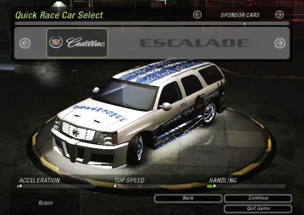

blog > Customizing sponsor cars (2023 July 15)
There are a few cheats that, when triggered, will unlock a sponsor car that you can select when choosing a car for quick races. These are cars with a preset tuning (though it seems like none of them has some performance tuning done). For example, typing the cheat "yodogg" during boot (when you get on the "press enter" screen at start), will unlock Snoop Dogg's sponsor car. For all cheats, see: Cheat configuration data
After at least one of the sponsor car cheats has been triggered, one can select the "SPONSOR CARS" category of cars in quick race. I never noticed this category filter when I was younger, so I never manager to actually see these sponsor cars, since it only shows stock & customized cars by default. None of the guides and cheats pages that I've found has mentioned this, they always just describe the cheat as "sponsor car" and some mention that it is in "quick race", but none mention this category filter thing you have to operate to actually get the cars.

Snoop Dogg's sponsor car
Since one can only access these cars during quick race, it's not possible to check their configuration. Body parts can be guessed, but normally it's not possible to see things like the trunk area, with trunk layout and components configuration. They also of course feature vinyls that are not available for the player to use.
So the idea is to be able to select sponsor cars when using the "customization" menu, so one can create a tuned car based off a sponsor car. Then it's possible to see and browse - and even change - the whole configuration.
See nfsu2-re-hooks/fun-car-customize-sponsor.c for all the code together.
It's annoying to have to type the cheats every time you want to select sponsor cars. Especially since I changed the boot process so that the "press enter" screen is skipped (see Speedy boot).
This can be easily fixed by replacing CheatScreenData::IsSponsorCarCheatTriggered with a function that always returns 1.
static
int
__stdcall
fun_car_customize_sponsor_replace_CheatScreenData__IsSponsorCarCheatTriggered(unsigned int *sponsorCarHash)
{
return 1;
}
mkjmp(0x579D70, fun_car_customize_sponsor_replace_CheatScreenData__IsSponsorCarCheatTriggered);
Then it must be possible to choose sponsor cars from the car select menu when customizing. This can be done by hooking into function CarSelectFNGObject::ChangeCategory, which is used to determine what category of cars to show when the prev/next arrow buttons are pressed.
This car selection screen is used for a few different reasons: selecting quick race car, selecting car to customize, selecting car in online mode (not career car select, that one has a dedicated screen). So we're gonna add the sponsor category in the category rotation, but only if car selection is being done for choosing a car to customize:
static int fun_car_customize_sponsor_CarSelectFNGObject__ChangeCategory(struct CarSelectFNGObject *this, void *_, unsigned int message) { #define MSG_PREV 0x5073EF13 #define MSG_NEXT 0xD9FEEC59 if (profileData->menuState == MENU_STATE_CAR_CUSTOMIZE) { if (message == MSG_PREV) { switch (carSelectCategory) { case IS_STOCK_CAR | IS_TUNED_CAR: if (CarSelectFNGObject::CountAvailableCars(this, IS_SPONSOR_CAR)) { carSelectCategory = IS_SPONSOR_CAR; break; } case IS_SPONSOR_CAR: if (CarSelectFNGObject::CountAvailableCars(this, IS_TUNED_CAR))) { carSelectCategory = IS_TUNED_CAR; break; } case IS_TUNED_CAR: carSelectCategory = IS_STOCK_CAR; break; case IS_STOCK_CAR: carSelectCategory = IS_STOCK_CAR | IS_TUNED_CAR; break; } } else if (message == MSG_NEXT) { switch (carSelectCategory) { case IS_STOCK_CAR | IS_TUNED_CAR: carSelectCategory = IS_STOCK_CAR; break; case IS_STOCK_CAR: if (CarSelectFNGObject::CountAvailableCars(this, IS_TUNED_CAR))) { carSelectCategory = IS_TUNED_CAR; break; } case IS_TUNED_CAR: if (CarSelectFNGObject::CountAvailableCars(this, IS_SPONSOR_CAR))) { carSelectCategory = IS_SPONSOR_CAR; break; } case IS_SPONSOR_CAR: carSelectCategory = IS_STOCK_CAR | IS_TUNED_CAR; break; } } profileData->player1[profileData->currentPlayerIndex?].d4.currentCarSelectionCategory = carSelectCategory; CarSelectFNGObject::ResetBrowableCars(this); CarSelectFNGObject::UpdateUI(this); return 1; } return 0; } static __declspec(naked) void fun_car_customize_sponsor_CarSelectFNGObject__ChangeCategory_hook(unsigned int message) { _asm { push ecx call fun_car_customize_sponsor_CarSelectFNGObject__ChangeCategory test eax, eax jnz ok // we were not in customize menu, call the normal function // but first do the thing that we overwrote in order to jmp to this proc pop ecx mov eax, 0x7F444C // carSelectCategory mov eax, [eax] mov edx, 0x4EED15 // edx can be used because it's overridden later in that proc anyways jmp edx ok: add esp, 4 retn 0x4 } } mkjmp(0x4EED10, fun_car_customize_sponsor_CarSelectFNGObject__ChangeCategory_hook);
This will crash the game when continuing when a sponsor car is selected :D
Note: following code can be seen in revision c6786b6a7a59e3b31f20a41bcff108d4f2ec9982 but was changed afterwards, this is explained in the last section.
The game crashes now when continuing when a sponsor car is selected, inside CustomizeCar.
It will be called with a hash that denotes what car to customize. This could be a stock car
slot hash (like hash of STOCK_PEUGEOT) or a tuned car slot hash (like hash of TUNED_CAR_2)
or a career car slot hash (like hash of CAREER_SLOT_1) or an online car slot (like hash of
ONLINE_CAREER_CIRCUIT), see comment of struct InventoryCar.slotHash.
When selecting a sponsor car, it will use its hash (like hash of SPONSOR_SNOOP_DOGG). The
function tried to find a car in the list of stock cars, tuned cars, career cars or online
cars. It won't find the sponsor car, and there is no fallback or null checking, so a segfault
follows.
To fix that, we can hook at the last place right before the car is used, try to find a sponsor car for that hash, and continue with that one. We need an instance of struct TunedCar, so we can't just return the struct SponsorCar instance, so we're gonna call CarCollection::CreateNewTunedCarFromFromDataAtSlot (this function is used when selecting a stock car to tune) with the stock name hash that the sponsor car is based on.
static struct TunedCar* __stdcall fun_car_customize_sponsor_GetSponsorCar(struct CarCollection *this, unsigned int slotNameHash) { char buf[32]; int i; i = this->numSponsorCars; while (i-- > 0) { if (this->sponsorCars[i].__parent.slotHash == slotNameHash) { sprintf(buf, "STOCK_%s", FindCarPreset(this->sponsorCars[i].carPresetHash)->modelName); return CarCollection::CreateNewTunedCarFromFromDataAtSlot(this, cshash(buf)); } } return NULL; } static __declspec(naked) void fun_car_customize_sponsor_set_car_instance_if_missing() { _asm { test esi, esi jnz allgood // oh yey, no car instance, we're probably trying to customize a sponsor car. LEHDOTHIS // only need to retain esi here (value in ebx is not used from the hooked point) push ebx // slotNameHash push ecx // this call fun_car_customize_sponsor_GetSponsorCar mov esi, eax mov byte ptr [ebp+8+3], 1 // this happens when a new tuned car is created from stock car, so lets do that allgood: mov cl, byte ptr [ebp+8+3] // overwrote this push 0 // overwrote this mov eax, 0x552DC0 jmp eax } } mkjmp(0x552DBB, fun_car_customize_sponsor_set_car_instance_if_missing);
Crash fixed, but now we just get a stock car when we choose to customize a sponsor car.
Note: following code can be seen in revision c6786b6a7a59e3b31f20a41bcff108d4f2ec9982 but was changed afterwards, this is explained in the last section.
In CarCollection::CreateNewTunedCarFromFromDataAtSlot, right after the function we hooked in the previous section to fix the crash,
the struct TunedCar instance is used to call its function struct InventoryCar$vtable.procApplyTuningToInstance,
which I believe is a function that applies tuning of this car to a car instance.
With that in mind, it means that that (alleged) ApplyTuning function is called on the newly created struct TunedCar instance, which - if you remember from previous section - is created from a stock car. So then it makes sense that we just get a fresh stock car.
To fix, let's change the code from the previous section to store the sponsor car that was selected, so that we have that reference to apply tuning.
// assign the sponsorcar to this when returning from fun_car_customize_sponsor_GetSponsorCar struct SponsorCar *fun_car_customize_sponsor_stored_sponsorcar;
Then hook once more, and call the correct functions (for sponsor cars) with the sponsor car instances if we have one. Otherwise just execute the code that it normally would.
static
__declspec(naked)
void
fun_car_customize_sponsor_apply_sponsor_tuning()
{
_asm {
mov eax, [fun_car_customize_sponsor_stored_sponsorcar]
test eax, eax
jz wasnotsponsorcar
//push 0 // already pushed
//push offset customizingCarInstanceA // already pushed
push edi // playerIndex
mov ecx, [fun_car_customize_sponsor_stored_sponsorcar]
mov eax, offset SponsorCar::ApplyTuningToInstance // vtable func C for sponsor cars
call eax
// 2nd car instance
push 0
push offset customizingCarInstanceB
push edi
mov ecx, [fun_car_customize_sponsor_stored_sponsorcar]
mov eax, offset SponsorCar::ApplyTuningToInstance // vtable func C for sponsor cars
call eax
// reset state (so we don't do this again when another car is selected) and rt
mov dword ptr [fun_car_customize_sponsor_stored_sponsorcar], 0
mov eax, 0x552DF2
jmp eax
wasnotsponsorcar:
// do what we overwrote and jmp back
mov edx, [esi]
push edi
mov ecx, esi
mov eax, 0x552DDC
jmp eax
}
}
mkjmp(0x552DD7, fun_car_customize_sponsor_apply_sponsor_tuning);
So that... kind of worked. But as long as no component is changed, it still shows the stock car. Interesting behavior. Once changing and saving a component though, it will always correctly show the tuning and the car will be saved to the tuned cars collection.
Note: following code can be seen in revision c6786b6a7a59e3b31f20a41bcff108d4f2ec9982 but was changed afterwards, this is explained in the last section.
Thanks to more findings, I managed to fix the 'bug' from previous section. Function TunedCar18::CopyTuningFromMenuCarInstance seems to apply tuning done to a struct MenuCarInstance back to a struct TunedCar. So we just have to call that function before returning after applying the stock car tuning:
// copy tuning back from the car instance to the tuned car entry push offset customizingCarInstanceB lea ecx, [esi+field_18] mov eax, offset TunedCar18::CopyTuningFromMenuCarInstance call eax
sweet!
Thanks to more findings when I managed to fix the ghost stock car bug, I also found TunedCar18::CopyTuningFromMenuCarInstance, so then the idea came up to use that to apply sponsor car tuning immediately when creating the tuned car instance. And that worked!
This makes the code in the last two sections unnecessary. The
fun_car_customize_sponsor_GetSponsorCar function also gets a more appropriate
name of fun_car_customize_sponsor_CreateTunedCarFromSponsorCar.
static struct TunedCar* __stdcall fun_car_customize_sponsor_CreateTunedCarFromSponsorCar(struct CarCollection *this, unsigned int slotNameHash) { struct MenuCarInstance *menuCarInstance; struct SponsorCar *sponsorCar; struct TunedCar* tunedCar; char buf[32]; int i; i = this->numSponsorCars; while (i-- > 0) { if (this->sponsorCars[i].__parent.slotHash == slotNameHash) { sprintf(buf, "STOCK_%s", FindCarPreset(this->sponsorCars[i].carPresetHash)->modelName); tunedCar = CarCollection::CreateNewTunedCarFromFromDataAtSlot(this, cshash(buf)); // (need a temp instance of MenuCarInstance to use for code below, the customizingCarInstanceB variable // is a simple instance to use because it gets overridden later in the Customize process // anyways so we can do as we please) // (4th param is unknown, but unused in SponsorCar's ApplyTuning, so whatever is fine SponsorCar::ApplyTuningToInstance(sponsorCar, profileData->currentPlayerIndex?, &customizingCarInstanceB, 0); // copy tuning back from MenuCarInstance to tuned car instance TunedCar18::CopyTuningFromMenuCarInstance(&tunedCar->field_18, &customizingCarInstanceB); return tunedCar; } } return NULL; }
See nfsu2-re-hooks/fun-car-customize-sponsor.c for all the code together.